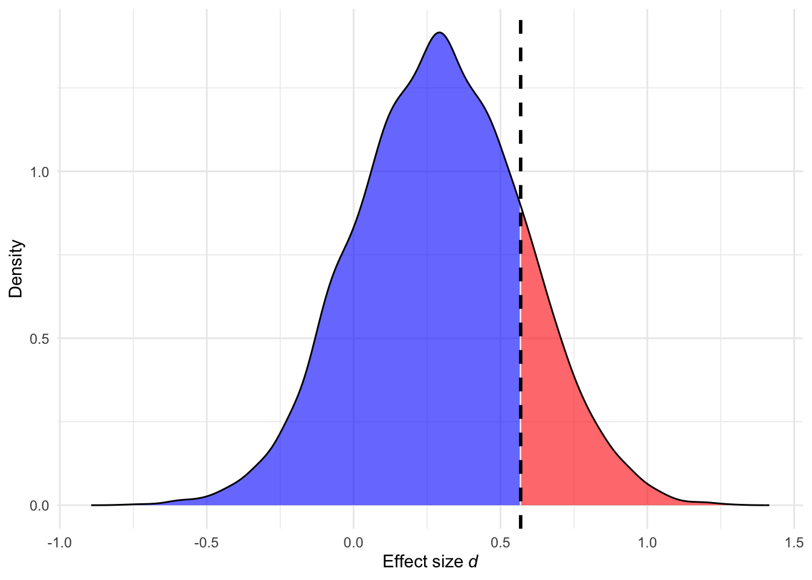

3 Effect size justification
An a priori power analysis is a method researchers can use to ensure their studies are designed with high power to reliably detect an effect size of interest. But what exactly is the effect size of interest? The effect size refers to the magnitude of a phenomenon or intervention—essentially, how big the effect is. The effect size of interest, then, is the specific quantity that researchers aim to detect and it is central to the research question and purpose of the study. The effect size of interest might represent, for example, a correlation between two variables (e.g., stress and exercise), a difference between two groups, or an interaction effect. To design an informative study, it is essential that researchers carefully consider which effect sizes are interesting. It can be informative to compute the critical effect size for a study design (Perugini et al. 2025). The critical effect size (dcrit) is the minimal effect size that can reach statistical significance given a sample size, test and \(\alpha\). For an unpaired t-test, dcrit can be calculated as follows:
# Set parameters
N <- 50 # total sample size
type <- "two.sided" # type of test
ci <- 0.95 # confidence interval
# Calculate critical effect size
dc <- critical_t2s(
n1 = N/2,
n2 = N/2,
var.equal = TRUE,
hypothesis = type,
conf.level = ci)
dc$dc[1] 0.5686934This means that a study employing a two-group design with an N of 50 (25 per group) can only yield a significant result if the observed effect size is equal to or larger than dcrit = 0.57. It can therefore be informative to ask yourself whether dcrit for a study design falls within the range of effect sizes that can be realistically expected. Below we briefly discuss common approaches for justifying effect sizes of interest and highlight their limitations. For a more comprehensive overview, readers are encouraged to consult Lakens (2022) , which provides detailed guidance on best practices for effect size justification in a priori power analyses.
3.1 Smallest effect size of interest (SESOI)
The SESOI represents the smallest effect size that researchers consider practically or theoretically relevant. In clinical contexts, this concept is often referred to as the Minimal Clinical Importance Difference (MCID) (Cook 2008), which represents the smallest change in a treatment outcome that a patient or clinician would regard as meaningful enough to warrant a change in clinical management or treatments. In essence, the SESOI sets a lower bound on what effects are considered relevant. Effects smaller than the SESOI are viewed as too small to be meaningful, either practically or theoretically, and are therefore considered unimportant. Readers are referred to Anvari and Lakens (2021) for a comprehensive overview of different approaches to set the SESOI. Basing an a priori power analysis on the SESOI is considered best practice (Lakens 2022), as it allows researchers to design more informative studies (Lakens 2017; Riesthuis 2024; Murphy and Myors 1999). That is, setting the SESOI enables researchers to design studies that can (a) test whether an effect size is statistically smaller than the SESOI, and therefore practically equivalent to 0 (using an equivalence test; Lakens (2017)); and (b) test whether an effect size is statistically larger than the SESOI and thus meaningful (using a minimum-effect test; Murphy and Myors (1999)). Although basing a priori power analyses on the SESOI is methodologically considered best practice, defining the SESOI is a complex task that requires domain knowledge and dedicated research. As a result, this approach is not always feasible. Consequently, researchers often rely on alternative approaches that come with important limitations.
3.2 Expected effect sizes
When setting the SESOI is not possible, researchers often base their a priori power analysis on an expected effect size. Because the true effect size is generally unknown, researchers need to make educated guesses about the true effect. For that, they typically use:
3.2.1 An estimate from a previous study
Researchers often base their a priori power analysis on an effect size reported in a previous study. It is worth highlighting that in most empirical studies, researchers collect data from a sample of a broader population—such as university students in a country, patients with Alzheimer’s disease or pregnant women— because it is rarely feasible to collect data from the entire population. As a result, effect sizes calculated from samples are merely estimates of the true population effect and are subject to random variation. For example, if the true effect size is d = 0.2, a researcher might observe a larger or smaller effect in their study just by purely chance. This sampling variability can lead to over or underestimation of the true effect size.
# Ensure reproducibility
set.seed(050990)
# Set parameters
N <- 100 # total sample size
smd <- 0.3 # standardized mean difference
# Simulate data for a two-group study design
control <- rnorm(n = N/2, mean = 0, sd = 1)
intervention <- rnorm(n = N/2, mean = smd, sd = 1)
# calculate effect size
observed_smd <- escalc(
m1i = mean(intervention), sd1i = sd(intervention), n1i = N/2,
m2i = mean(control), sd2i = sd(control), n2i = N/2,
measure = "SMD") In this simulated study, the observed effect size = 0 which underestimates the true effect size d = 0.3. This illustrates how random variation might result in an overestimated or underestimated estimate of the true effect size.
Another reason researchers should be careful when using an effect size from a previous study is the presence of selection bias in the published literature. Two sources of selection bias are (a) the preference of editors, reviewers and researchers to prefer studies yielding significant p-values in support of the tested hypothesis (e.g., Scheel et al. 2021) and (b) questionable research practices that exploit flexibility in data analysis to render non-significant p-values significant (Bakker et al. 2012; Stefan and Schönbrodt 2023). Selection bias leads to inflated effect sizes, especially in the presence of studies with underpowered designs. This phenomenon can be intuitively illustrated using the concept of critical effect size (dcrit).
Assuming a study employing a two-group design with an N of 50 (25 per group), dcrit is equal to 0.57. Assuming that the true effect size is smaller than this critical value, and publication bias is present, studies that happen to overestimate the true effect size are more likely to be published. As a result, published effect sizes are more likely to be inflated estimates of the true effect. This bias is illustrated in Figure 3.1: although the true effect size is 0.3, effect sizes larger than 0.57 are more likely to be published, leading to a biased literature (Hagger et al. 2016; Ciria et al. 2023). If researchers use such inflated effect sizes in a priori power analysis, the resulting analysis will underestimate the required sample size, increasing the risk that the new study will also be under-powered (Anderson et al. 2017). Unless the study is a Registered Report, researchers should be cautious when relying on reported effect sizes from previous studies and are encouraged to use conservative or adjusted-bias effect size estimates (see next section).
# Ensure reproducibility
set.seed(050990)
# Set parameters
smd <- 0.3
n_sim <- 10000
# Simulate a distribution of effect sizes
# Approximate standard error of d for a two-group design
se_d <- sqrt(N / (N/2)^2 + smd^2 / (2 * N))
effect_sizes <- rnorm(n_sim, mean = smd, sd = se_d)
# Create a density object
density_obj <- density(effect_sizes)
# Create a data frame from the density object
df <- data.frame(x = density_obj$x, y = density_obj$y)
# Create a new column to color the area
df$color <- ifelse(df$x > dc$dc, "red", "blue")
# Plot the density with shaded areas
ggplot(df,
aes(x = x, y = y)) +
geom_area(data = subset(df, x <= dc$dc),
aes(fill = color),
alpha = 0.6) +
geom_area(data = subset(df, x > dc$dc),
aes(fill = color),
alpha = 0.6) +
geom_line(color = "black") +
geom_vline(xintercept = dc$dc,
linetype = "dashed",
color = "black",
linewidth = 1) +
scale_x_continuous(expression(Effect~size~italic(d))) +
labs(y = "Density") +
scale_fill_identity() +
theme_minimal()
3.2.2 An estimate from a pilot study
It is not uncommon that researchers conduct a pilot study to obtain an estimate of the true effect size which is then used to conduct an a priori power analysis. However, as shown by Lakens (2018), this practice leads to substantially under-powered studies in most realistic situations. Researchers who base their a priori power analyses on effect size estimates observed in pilot studies will unknowingly design on average underpowered studies, as long as they do not take bias in the estimated effect sizes and follow-up bias into account. The difference between the desired and achieved power can be especially worrying when the sample size of the pilot study and/or the population effect size is small.
3.2.3 An estimate from a meta-analysis
Another source for informing a priori power analyses are meta-analyses. However, they may suffer from the same limitations as individual studies. If the published literature suffers from studies with under-powered designs and selection bias, published effect sizes may end up in meta-analyses leading to inflated meta-analytic effect sizes (e.g., Hagger et al. 2016; Ciria et al. 2023). In this case, researchers should select bias-adjusted meta-analytic effect sizes to obtain a more conservative effect size estimate for their a priori power analyses.
3.3 Effect size thresholds
3.3.1 Cohen’s d thresholds
Researchers sometimes base their a priori power analyses on Cohen’s d thresholds—typically interpreting d = 0.2 as a small effect, d = 0.5 as medium, and d = 0.8 as large. Even when you open G*Power, a ‘medium’ effect size is the default option. However, Cohen’s d thresholds should not be used in a priori power analyses. Cohen originally proposed them to describe typical effect sizes observed in social psychology. Applying these benchmarks to other scientific fields ignores the ‘research context’ including the populations from which participants were drawn, research designs, intervention or experimental manipulation. As a result, selecting an effect size based on Cohen’s d benchmarks may lead to a situation where the selected effect size does not reflect the true effect size. Using an inappropriate effect size can lead to under-powered study designs (when the true effect size is smaller) or over-powered study designs (if the true effect size is larger), both of which pose methodological and ethical concerns.
3.3.2 Field-specific thresholds
On other occasions, researchers might use Cohen’s d thresholds derived from the distribution of effect sizes within a field. While this approach appears more tailored than using Cohen’s d thresholds, it should still be avoided. The studies used to calculate these field-specific distributions may differ substantially from the planned study in terms of design, population, or measurement tools. Additionally, published effect sizes might be inflated due to selection bias and studies with under-powered designs.
If researchers cannot justify an effect size of interest, they should not be compelled to conduct an a priori power analysis. Designing a high-powered study requires careful groundwork and a solid understanding of the underlying phenomenon (Scheel et al. 2020). Without this foundational knowledge, researchers may lack the theoretical understanding to specify a plausible effect size. In such cases, sample size justifications based on sequential analysis might be more appropriate (Lakens 2014).